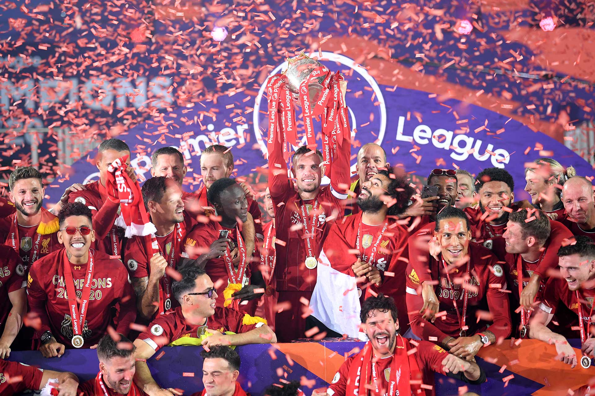
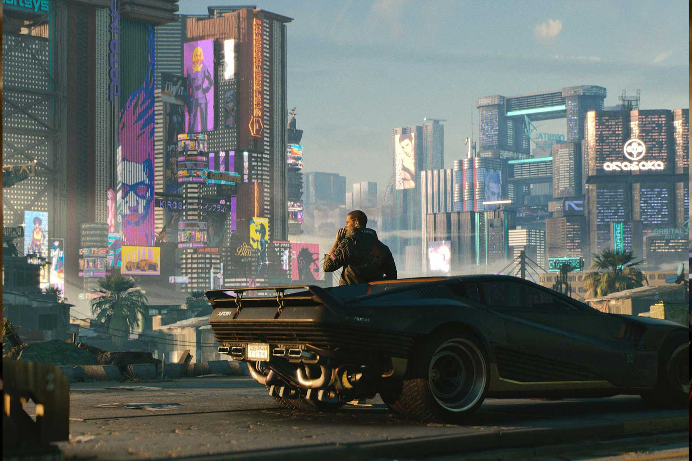
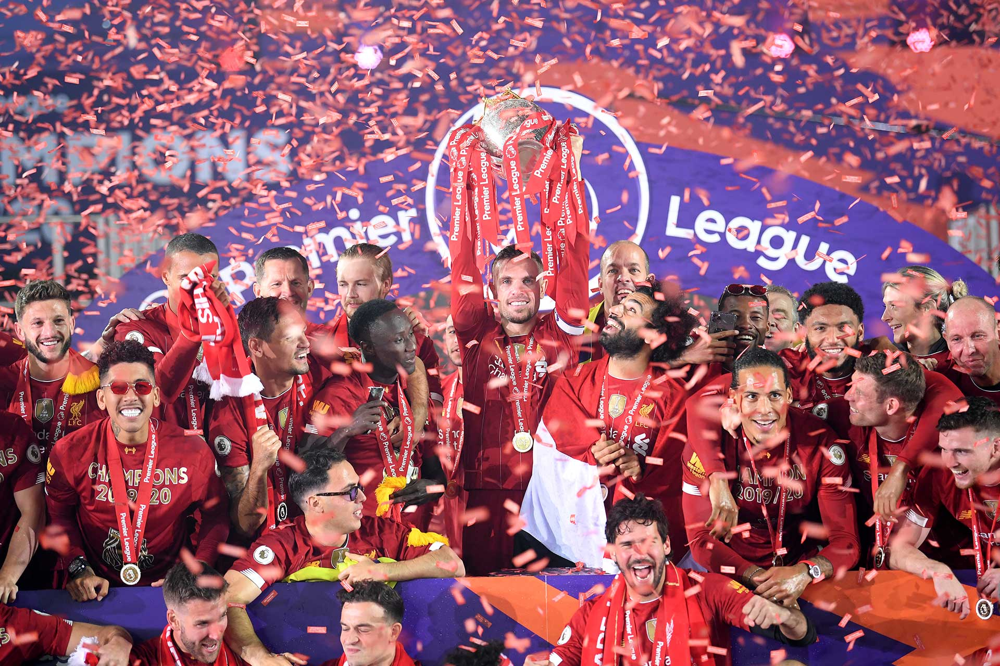
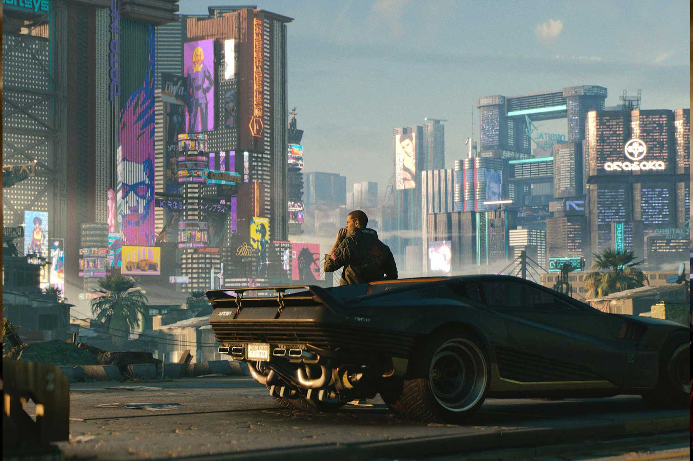
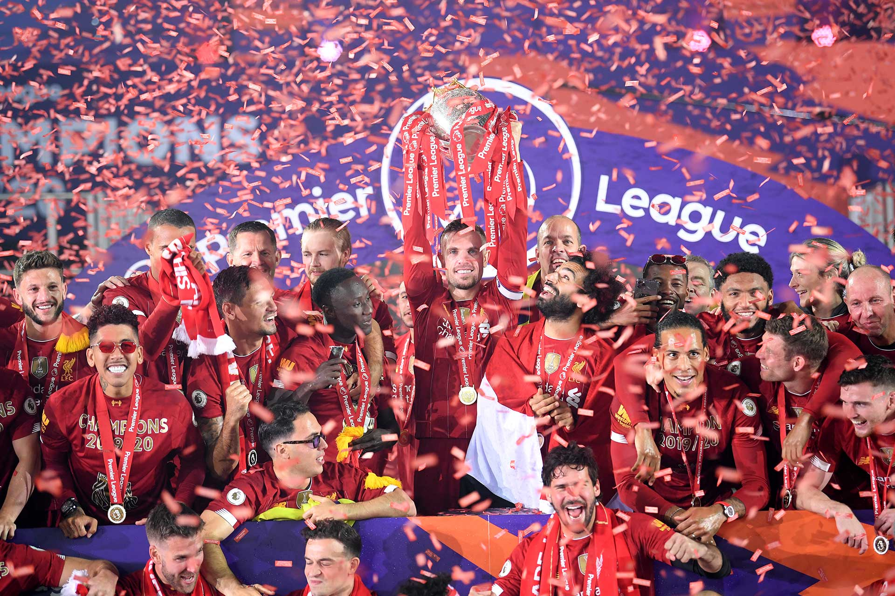
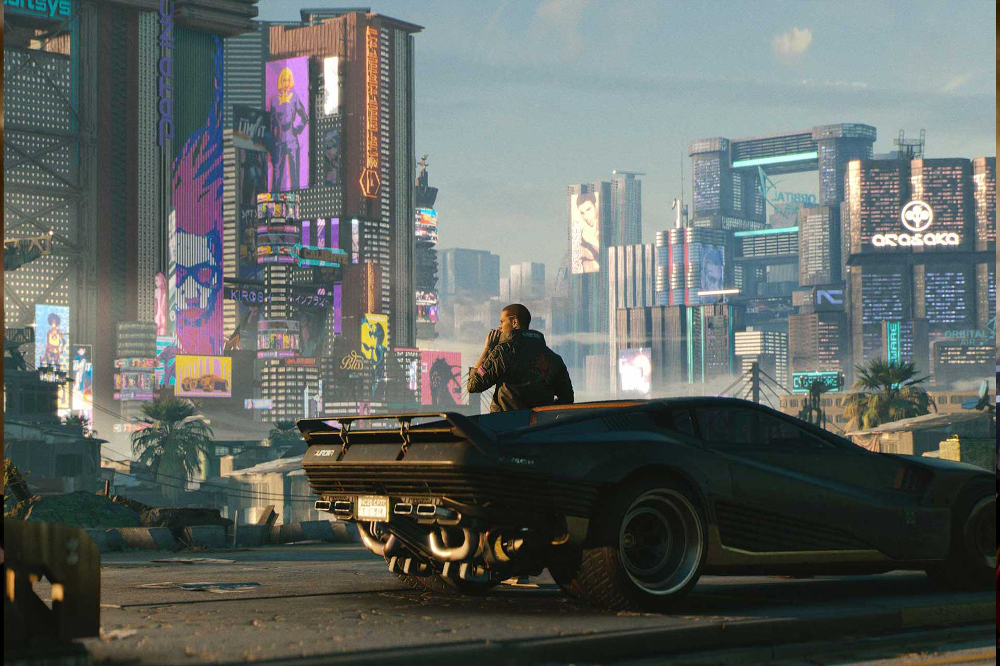
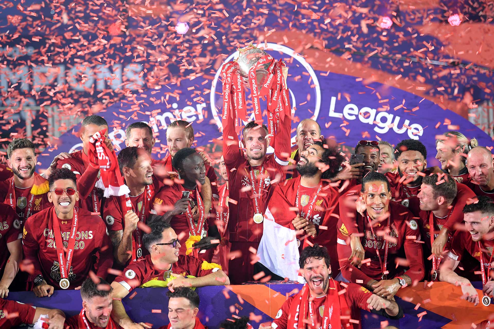
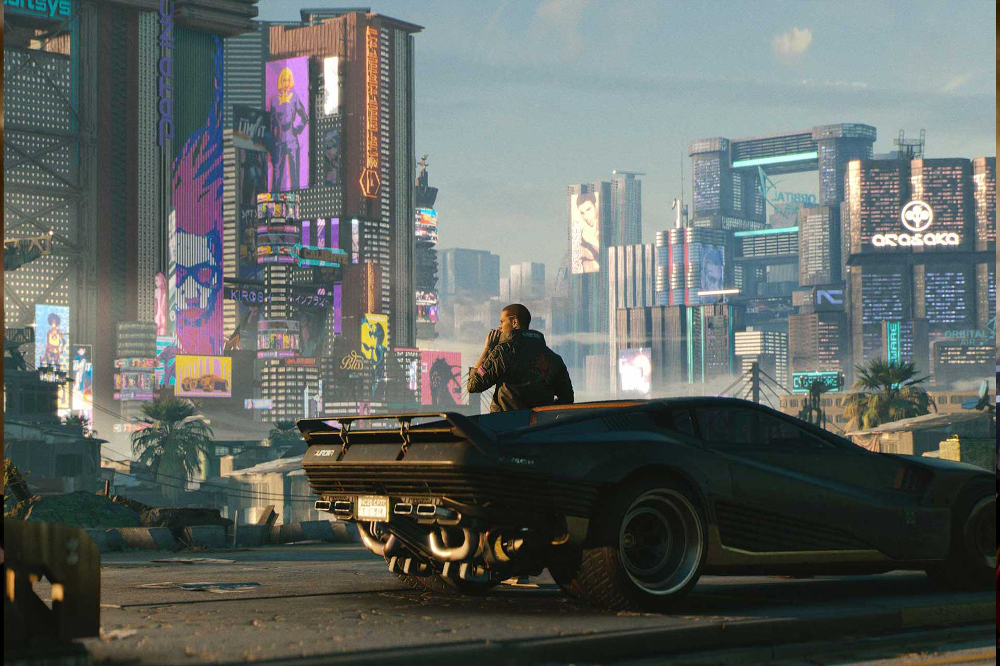

итоги
года
2020
 



Калифорния стала крупнейшим штатом США, в котором легализовано употребление марихуаны в развлекательных целях.

Первая ракетка Украины Элина Свитолина выиграла первый турнир в году в австралийском Брисбене. После чего поднялась в рейтинге WTA на четвертое место.

В южнокорейском Пхёнчхане прошла Зимняя Олимпиада. В соревнованиях приняли участие спортсмены из 92 стран. Больше всего медалей завоевали норвежцы. На счету Украины всего одна медаль, зато золотая. Золотую награду в лыжной акробатике завоевал фристайлист Александр Абраменко.

Главным триумфатором 90-й церемонии награждения кинопремии Оскар стала фэнтезийная мелодрама режиссера Гильермо дель Торо Формула воды.

Начался первый этап медицинской реформы в Украине. В рамках кампании "Врач для каждой семьи" украинцы начали выбирать себе семейных врачей.

Самое большое в мире круизное судно Symphony of the Seas вышло в своё первое плавание.

В результате мирных протестов премьер-министр Армении Серж Саргсян и его правительство ушло в отставку, вскоре премьер-министром стал оппозиционный лидер Никол Пашинян.

Впервые за более чем десять лет прошла встреча лидеров Южной и Северной Кореи.

В Украине запустили популярный сервис платежей Apple Pay.

Украинец Василий Ломаченко отправил в нокаут Хорхе Линареса и завоевал титул чемпиона мира по версии WBA в легком весе. Ломаченко установил мировой рекорд в боксе по скорости завоевания титулов: стал чемпионом мира в трех весовых категориях всего за 12 поединков.

За свадьбой британского принца Гарри и актрисы Меган Маркл следил весь мир.

Украинская теннисистка Элина Свитолина второй год подряд победила на престижном турнире WTA Premier 5 в Риме. Этот титул стал 12 в карьере Свитолиной, что позволило ей установить национальный рекорд, больше трофеев в одиночном разряде не завоевывал ни один украинский теннисист.

В Украине открыли Бескидский железнодорожный тоннель под Карпатами – крупнейший отечественный инфраструктурный объект последних десятилетий.

Столица Украины приняла финал Лиги Чемпионов – главного футбольного турнира Европы. Реал Мадрид победил Ливерпуль, а киевляне насладились атмосферой большого праздника.

Украинский школьник Валентин Фречка победил на "Олимпиаде гениев" в США. Школьник изобрел способ, как изготавливать бумагу из опавших листьев.

Верховная Рада приняла закон о создании Высшего антикоррупционного суда в Украине. Это открыло Украине дорогу к траншу МВФ и завершило формирование вертикали антикоррупционных органов в стране. Вот только сам суд еще не заработал.

Они угрожали уничтожить друг друга, а потом мило беседовали. В Сингапуре прошла первая в истории встреча лидеров США и КНДР. Дональд Трамп назвал общение с Ки Чен Ыном фантастическим.

В России стартовал Чемпионат мира по футболу.

Биотехнологи США создали первые инсулиновые таблетки

Чемпионом мира по футболу во второй раз стала сборная Франции, обыгравшая в финале сборную Хорватии со счетом 4:2.

Полное затмение Луны совпало с другим редким явлением - великим противостоянием Марса. Такое совпадение случается раз в 25 тысяч лет.

КНР испытала летательный аппарат Xingkong-2. Он может нести ядерные боеголовки и преодолевать любую ПВО, благодаря высокой скорости и непредсказуемости траектории.

Академия киноискусств объявила о введении новой номинации - Лучший популярный фильм. Эта категория рассчитана на блокбастеры.

В немецком городе Карлсруэ полиция прибыла на вызов мужчины, которого преследовал и атаковал бельчонок. Полиция назвала грызуна Карлом-Фридрихом и назначила его своим талисманом.

В Instagram среди девушек стал популярным интересный тренд - фотографироваться, прикрывая ананасами обнаженную грудь.

Плакала группы KAZKA стала первой украинской песней, вошедшей в топ-10 престижного мирового чарта Shazam. На сегодняшний день клип на песню в YouTube посмотрели 80 миллионов раз.

Ученые нашли подвесную свинцовую печать для скрепления документов, вероятно, эпохи Ярослава Мудрого. На ней есть изображение цветущего креста. Аналоги археологи ранее не встречали.

Украина получила от Соединенных Штатов два патрульных катера класса Island, которые раньше входили в Береговую охрану США.

В древнем некрополе Саккара археологи нашли сотни новых саркофагов с мумиями. Они хорошо сохранились, несмотря на свой возраст - 26 веков.

Николаевский завод Океан модернизировал турецкий сухогруз DREMORA 3 и удлинил его на 24 метра.

На Сицилии в городе Салеми выставили на продажу больше 30 домов по цене всего в один евро.

В США украинский силач Алексей Новиков выиграл соревнования The World's Strongest Man и получил титул самого сильного человека.

На территории Припяти и в других районах Зоны отчуждения поселились хищные птицы - пустельги. Здесь замечена наибольшая гнездовая популяция этого вида на украинском Полесье.

Основатель SpaceX и Tesla Илон Маск обошел основателя Microsoft Билла Гейтса и поднялся на вторую строчку в рейтинге богатейших людей Bloomberg. Его состояние оценивается в 128 миллиардов долларов.

Нацбанк первую вертикальную банкноту посвятил первому космонавту независимой Украины Леониду Каденюку.

Страдающий депрессией после смерти возлюбленной слонихи 36-летний слон по имени Кааван переехал из зоопарка Исламабада в камбоджийский заповедник.

Самая высокая гора Земли оказалась выше на 86 сантиметров - 8848,86 метра. Китай и Непал, решив поставить точку в этом вопросе, провели совместное исследование.

Cyberpunk 2077 от создателей культового Ведьмака поразил детализацией мрачного фантастического будущего.

Полное солнечное затмение происходит, когда Солнце, Земля и Луна выстраиваются по прямой так, что Луна затмевает солнечный свет.